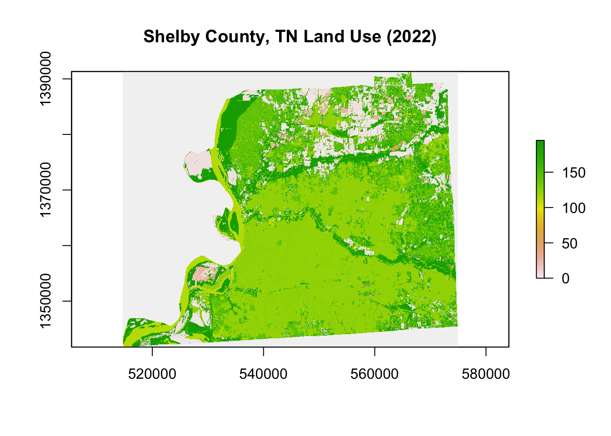

This chapter introduces the basic skills of spatial analysis with R. By the end of this chapter, you’ll understand how geographic data is structured and stored.
8 Why Spatial Analysis?
Imagine you’re an agricultural economist trying to understand why crop yields vary across a region. Or an environmental economist mapping the communities most exposed to water pollution to study its effects on local property values. Or a researcher tracking how land-use change over a decade is affecting ecosystem services like water filtration and carbon storage.
All of these problems share something in common \(\rightarrow\) location matters.
That’s what spatial analysis is about: using the geographic dimension of data to find patterns, relationships, and answers that you simply couldn’t see in a regular spreadsheet. Soil quality gradients, rainfall distribution, proximity to markets, land tenure boundaries, these are all inherently spatial questions.
R, traditionally known as a statistical programming language, has grown into a fully capable GIS (Geographic Information System) environment. With packages like sf, terra, and tmap, R can do everything from mapping agricultural land cover to overlaying farm boundaries with climate data for econometric analysis.
9 Types of spatial data in R
Spatial data powers decision-making across fields. Whether you’re estimating the economic impact of a drought, evaluating the spread of a pest outbreak, or identifying which farming communities are most vulnerable to groundwater depletion, you need data that tells you not just what is happening, but where and when.
Where Does Spatial Data Come From?
Remote Sensing & Satellites
Satellites orbiting the Earth continuously capture imagery and measurements that are invaluable for agricultural and environmental research. For example:
Land use and land cover (LULC) maps derived from satellite imagery can reveal how agricultural land is being converted to urban development over time (Datasets)
Vegetation indices like NDVI (Normalized Difference Vegetation Index) allow researchers to monitor crop health, detect drought stress, and estimate yields before harvest
Evapotranspiration estimates from remote sensing help quantify how much water crops are consuming, critical for irrigation management and water rights policy. OpenET
Ground-Based Monitoring Stations
Fixed monitoring stations placed at specific locations collect high-resolution data on environmental and climatic conditions over time. In agricultural and environmental economics, common applications include:
Weather stations recording temperature, precipitation, and humidity
Stream gauges and groundwater wells tracking surface water flows and aquifer levels
Air and water quality sensors monitoring pollution levels near agricultural or industrial zones
Before jumping into code, we need to understand how geographic information is actually represented. Spatial data can be represented using vector and raster data.
9.1 Vector data
Vector data is used to display points, lines, and polygons. Vector data may represent, for example, locations of monitoring stations, road networks, or counties of a country. Moreover, these data can also have associated information such as temperature values measured at monitoring stations or number of people living in counties.
Geometry Type
What It Represents
Real-World Example
Point
A single location
A weather station, an irrigation well, a soil sampling site
Line
A connected path
An irrigation canal, a river, a farm road
Polygon
An enclosed area
A farm parcel, a watershed, a county boundary
The sf package allows us to work with vector data which is used to represent points, lines, and polygons.
9.1.1 Shapefile
Vector data is commonly stored in a format called a shapefile. Despite the name, a shapefile is actually a collection of multiple files that must be kept together to work properly. The three essential files are:
.shp: the geometry itself (the points, lines, or polygons)
.shx: an index file that helps software navigate the geometry quickly
.dbf: a table storing the attributes (e.g., farm name, crop type, area)
You may also encounter supporting files like .prj (the coordinate reference system) and .shp.xml (metadata).
Common mistake:If you download a shapefile and only keep the .shp file, R won’t be able to read it properly. Always transfer, move, or share all files in the shapefile folder together.
Attributes:
Every spatial feature can carry non-spatial information called attributes — stored in a table, just like a spreadsheet. A polygon representing a U.S. county might have attributes like population, median income, or area.
The code below demonstrates how to download and visualize polygon data using the tigris package (learn more here), which provides direct access to U.S. Census Bureau geographic boundary files.
We download the county boundaries for Tennessee using the counties() function and store them as an sf object — the standard spatial data format in R. We then use ggplot2 with geom_sf() to produce a simple map of all 95 Tennessee counties.
options(tigris_use_cache =TRUE)library(tigris)library(sf)library(ggplot2)# Download Tennessee county boundariestn_counties <-counties(state ="TN", cb =TRUE)class(tn_counties)
[1] "sf" "data.frame"
head(tn_counties)
Simple feature collection with 6 features and 12 fields
Geometry type: MULTIPOLYGON
Dimension: XY
Bounding box: xmin: -90.31045 ymin: 34.99419 xmax: -81.93302 ymax: 36.65244
Geodetic CRS: NAD83
STATEFP COUNTYFP COUNTYNS GEOIDFQ GEOID NAME NAMELSAD
119 47 157 01639790 0500000US47157 47157 Shelby Shelby County
120 47 165 01639794 0500000US47165 47165 Sumner Sumner County
121 47 019 01639730 0500000US47019 47019 Carter Carter County
122 47 123 01639776 0500000US47123 47123 Monroe Monroe County
123 47 013 01639728 0500000US47013 47013 Campbell Campbell County
237 47 001 01639722 0500000US47001 47001 Anderson Anderson County
STUSPS STATE_NAME LSAD ALAND AWATER geometry
119 TN Tennessee 06 1949650933 74596358 MULTIPOLYGON (((-90.31045 3...
120 TN Tennessee 06 1371278937 38053791 MULTIPOLYGON (((-86.7548 36...
121 TN Tennessee 06 883854427 16670692 MULTIPOLYGON (((-82.34228 3...
122 TN Tennessee 06 1646646990 43545177 MULTIPOLYGON (((-84.52585 3...
123 TN Tennessee 06 1243685305 46425147 MULTIPOLYGON (((-84.37563 3...
237 TN Tennessee 06 873359909 19657734 MULTIPOLYGON (((-84.44988 3...
Figure 9.1: Tennessee counties downloaded using the tigris package.
9.2 Raster data
Raster data (also referred to as grid data) is a spatial data structure that divides the region of study into rectangles of the same size called cells or pixels, and that can store one or more values for each of these cells. Raster data is used to represent spatially continuous phenomena, such as elevation, temperature, or air pollution values.
Raster data often come in GeoTIFF format which has extension .tif.
terra is the main package to work with raster data, which also has functionality to work with vector data.
When to use which?
Use vector when you care about distinct features with boundaries (roads, buildings, counties)
Use raster when you’re dealing with continuous surfaces (temperature, elevation, rainfall)
Raster data can be downloaded directly in R using the CropScapeR package, which provides access to the USDA National Agricultural Statistics Service (NASS) Cropland Data Layer (CDL) — an annual, satellite-derived land use dataset covering the entire continental United States.
The GetCDLData() function retrieves the CDL raster for Shelby County in TN (identified by its FIPS code, 47157) for the year 2022, where each pixel represents a 30×30 meter area classified into a land use category such as corn, soybeans, pasture, or forest. We then use plot() to produce a quick visualization of the resulting SpatRaster object.
library(CropScapeR)library(terra)# Download land use data for Shelby County, TN (FIPS code: 47157)shelby_landuse <-GetCDLData(aoi =47157, year =2022, type ="f")class(shelby_landuse)
[1] "RasterLayer"
attr(,"package")
[1] "raster"
# Plotplot(shelby_landuse, main ="Shelby County, TN Land Use (2022)")

Figure 9.2: Shelby County, TN land use data downloaded using the CropScapeR package.
10 Coordinate Reference Systems (CRS)
The Earth is a 3D sphere, but your screen is flat. A Coordinate Reference System (CRS) is the mathematical framework used to translate locations on the Earth’s curved surface onto a flat map. CRS of spatial data specifies the origin and the unit of measurement of the spatial coordinates.
Locations on the Earth can be referenced using two CRS types:
Geographic CRS (unprojected): latitude and longitude values are used to identify locations on the Earth’s three-dimensional ellipsoid surface
Projected CRS: uses Cartesian coordinates to reference a location on a two-dimensional representation of the Earth
Tip: Always check that your data layers share the same CRS before doing any analysis.
Every CRS has a unique numeric identifier called an EPSG code (tells your software exactly how coordinates should be interpreted). Most common CRSs can be specified by providing their EPSG (European Petroleum Survey Group) codes or their Proj4 strings.
Common spatial projections can be found at https://spatialreference.org/ref/. For example, the EPSG code 4326 refers to the WGS84 longitude/latitude projection, which is the default for most downloaded datasets, web maps, and GPS devices. Details of a given projection can be inspected using the st_crs() function of the sf package.
st_crs(tn_counties)
Coordinate Reference System:
User input: NAD83
wkt:
GEOGCRS["NAD83",
DATUM["North American Datum 1983",
ELLIPSOID["GRS 1980",6378137,298.257222101,
LENGTHUNIT["metre",1]]],
PRIMEM["Greenwich",0,
ANGLEUNIT["degree",0.0174532925199433]],
CS[ellipsoidal,2],
AXIS["latitude",north,
ORDER[1],
ANGLEUNIT["degree",0.0174532925199433]],
AXIS["longitude",east,
ORDER[2],
ANGLEUNIT["degree",0.0174532925199433]],
ID["EPSG",4269]]
EPSG code: 4269, which uniquely identifies the name of the CRS, NAD83, which stands for North American Datum 1983. It is the standard geographic coordinate system used by U.S. federal agencies, including the Census Bureau.